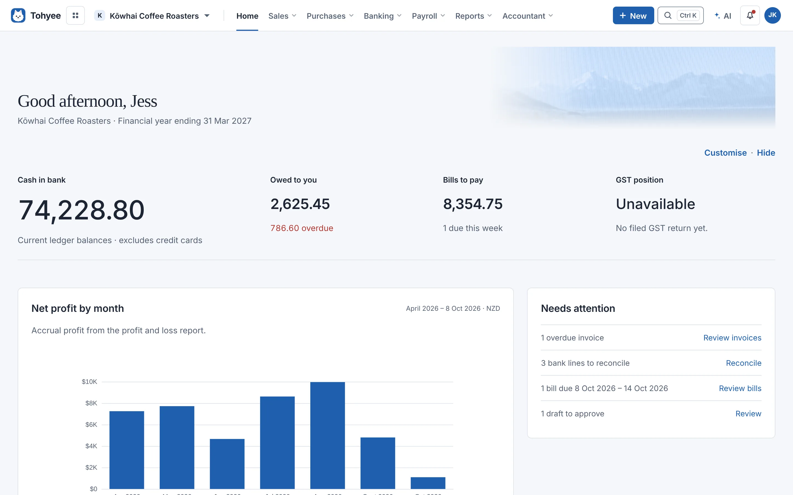
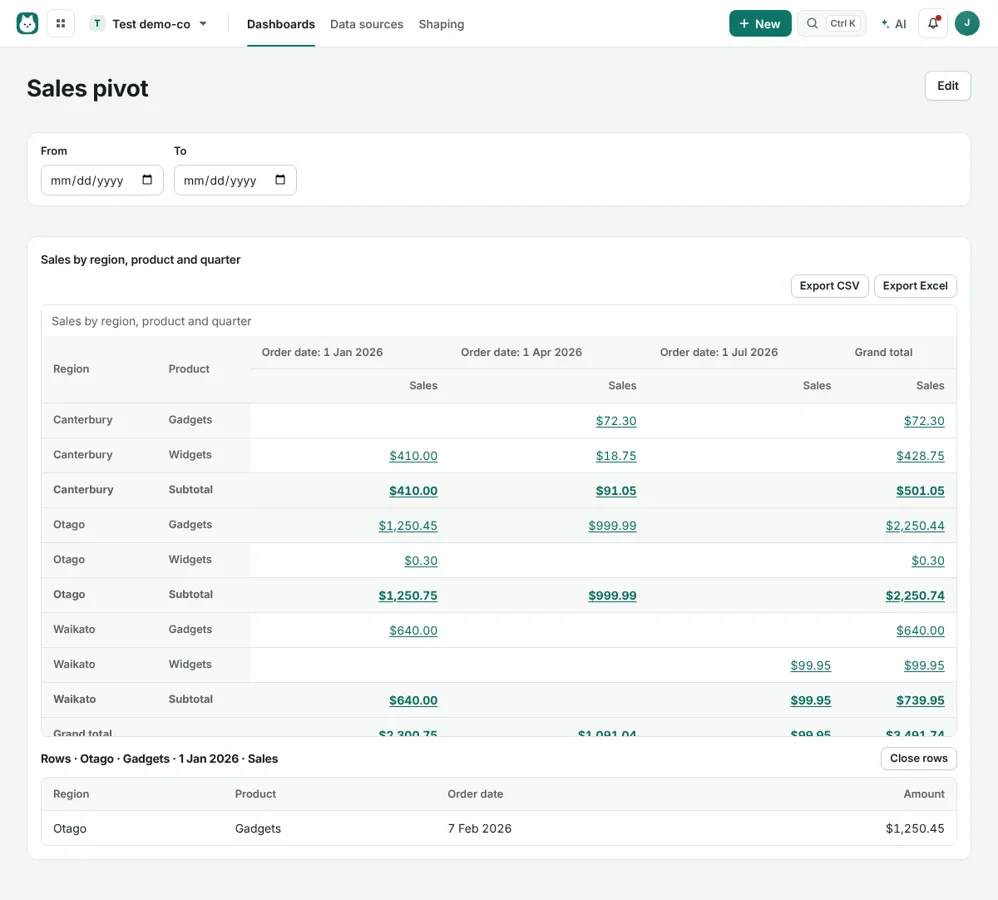

01 / ACCOUNTING
From invoice to insight.
Quotes, invoices, bills, approval workflows, bank reconciliation and GST. Add stock, fixed assets, budgets and financial reports as you grow.
Explore accounting ↗Open source · Made for Aotearoa
From the first sale to the year-end accounts. Bring your accounting, customer relationships and reporting together, on a computer you control.
Free software. No Tohyee subscription. Your choice of hosting.



Open source · AGPL v3
A database per organisation
Encrypted nightly backups
Windows, Docker & Linux
One place to work
Start with the modules your organisation needs. Keep the customer, the transaction and the story behind the numbers connected.
This overview includes features built on main. New CRM and livestock tools are ahead of the latest packaged release. Check what's new and available ↓
Quotes, invoices, bills, approval workflows, bank reconciliation and GST. Add stock, fixed assets, budgets and financial reports as you grow.
Explore accounting ↗Capture leads, manage your pipeline and follow up with purpose. Sales teams, campaigns, email templates, deal products and quotes connect the work.
Meet the CRM ↓Bring together Excel, CSV, your books and CRM. Shape your data, build dashboards and pivots, and share selected reports with clients.
See analytics ↓NZ pay runs, PAYE, KiwiSaver, leave, timesheets and payslips. Prepare wage bank files and payday filing files for upload to IRD.
Explore payroll ↗Dairy cattle, beef cattle and sheep. Reconcile head counts, work through supported herd scheme and NSC valuations, and record agent account sales.
Built for the farm ↓Projects and time, expense claims, Shopify and WooCommerce sales, and consolidation reports across organisations. Work from a browser, including your phone.
Explore connections ↓CRM / Expanded on main
Keep companies, people and opportunities together with the calls, tasks and conversations that move them forward.
Review incoming leads, spot duplicates and keep the original conversation.
Convert a lead into a company, person and opportunity. Track the next action and the expected close.
Use deal products to prepare a quote, then link the accepted sale to an invoice or sales order.
Analytics / Your data, in context
Start with the files you already use. Load Excel sheets and CSVs alongside your accounting and CRM data, then turn them into a view your team can use.
For New Zealand farms / New on main
Livestock has its own workflow. Follow movements and head counts through to valuation workings, the trading statement and the year-end journal.
Initial scope: dairy cattle, beef cattle and sheep. Some tax treatments remain unsupported. Farm budgets, forecasts and industry benchmarking are planned, not available features.
Follow the livestock roadmap ↗Start with last year's closing position. Explain movements and investigate any difference in the count.
Keep scheme elections and rate sources with the valuation. Show taxable movement and non-taxable revaluation separately.
Resolve missing information and reconcile the ledger opening before approving the year-end journal.
Built around ownership
Install Tohyee on your own computer or server. Invite your team and accountant to work in their browsers.
Each organisation has its own PostgreSQL database. Back up, restore as a copy or move an organisation independently.
Accounting roles, CRM sales roles and shared-report access help people get to the work they need. Two-step sign-in is included in installer setups.
Read the source, contribute improvements and choose your hosting. There is no Tohyee subscription; hosting and connected services may cost extra.
Connect the services you already use
Connections have different capabilities and setup requirements. Shopify sync is implemented but has not yet been verified against a live store. See scope and limitations ↗
Make it yours
Choose how you want to run Tohyee. Start with a test organisation and keep a separate copy of your backup key.
01 / Windows
02 / Docker
Use the release's Docker bundle and compose configuration. Keep your data and backups in persistent storage, and configure your secrets before starting.
Read the Docker guide ↗03 / Linux & source
Run a Linux release bundle or build the current source with Node.js 22 or 24 and PostgreSQL. The source includes development features ahead of packaged releases.
Build from source ↗Latest on main
October 2026
CRM: leads, sales teams, follow-ups, campaigns, team forecasts and deal quotes.
Livestock: head counts, supported tax valuations, agent account sales and monthly management values.
A few useful answers
Yes. Tohyee is open source under the GNU AGPL v3, with no Tohyee subscription or per-user fee. Your hosting, payment provider, bank feed or other connected services may have their own charges.
Your books live on the computer or server you choose. Each organisation has its own database. Connecting external services, remote access or AI involves those providers; review the settings for the services you enable.
Yes. Configure remote access using your own Cloudflare domain or Tailscale Funnel, then give each person their own login and role. Server administration stays local to the server. Provider setup and terms apply.
No. Tohyee prepares GST return figures and the supporting audit report, and produces payroll payday filing files. You review and submit them to IRD. Direct IRD account access and a wider tax module remain planned work.
No. The initial module supports dairy cattle, beef cattle and sheep with supported herd scheme and NSC calculations. Special cases, other valuation methods and some movements are not supported. Review the scope with your accountant before relying on a valuation. Monthly management values are reports only and do not change the tax valuation or post journals.
Not yet. B+LNZ and DairyNZ datasets are being considered for future farm comparisons. Data access and permission to redistribute it must be confirmed before benchmarks are included.
Tohyee makes encrypted nightly backups and can restore an organisation as a new copy. Keep backups off the server and keep the encryption key somewhere separate. Without the original key, encrypted backups cannot be opened.
Still early, and built in the open. Try a test organisation first. Review reports and returns before relying on them, and keep independent backups. Tohyee is provided without warranty under its licence and is not endorsed by Inland Revenue. Report security concerns through the security policy.
Open source. Made for New Zealand. Hosted by you.